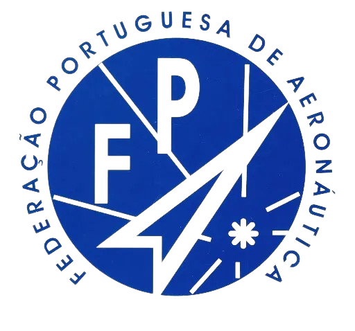
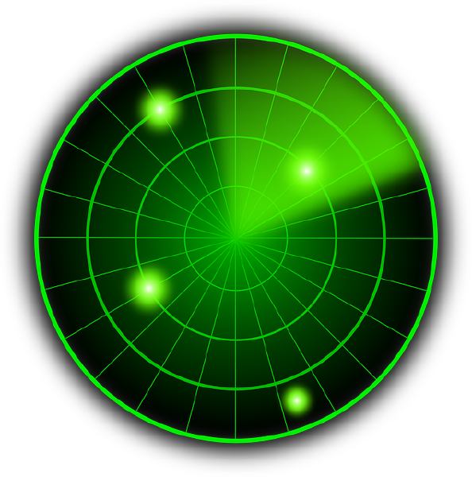

Breve historia

A Federação Portuguesa de Aeronáutica (FPA) foi criada em 1996, por iniciativa do Aero Club de Portugal (AeCP), que não podia obter o estatuto de Utilidade Pública Desportiva exigido pela Lei de Bases do Sistema Desportivo. O AeCP conseguiu que a FPA, representada por ele, pudesse obter esse estatuto se aprovasse Estatutos de acordo com o Regime Jurídico das Federações Desportivas num prazo de 180 dias.
O AeCP nomeou uma comissão para preparar os Estatutos, que foram aprovados numa reunião em Novembro de 1996, após muita discussão, especialmente sobre os ultraleves. Os Estatutos foram enviados à Direcção Geral dos Desportos, mas a escritura de formação da FPA só foi possível em Julho de 1998, com a participação de outros quatro aeroclubes, que formaram a Comissão Instaladora.
O apoio da Confederação do Desporto de Portugal foi ineficaz e causou vários atrasos no processo. Em Setembro de 1998, realizou-se a Assembleia Geral Extraordinária em Braga, onde se elegeram os primeiros Corpos Sociais da FPA.
Estatutos

Clique aqui para descarregar os estatutos da F.P.A.
Os presentes Estatutos foram aprovados em Assembleia Geral Ordinária da F.P.A. realizada no dia 12 de dezembro de 2020
Orgãos Sociais

- Mesa da Assembleia Geral
- Presidente: Cândido Vicente Ferreira Guarda
- Vice Presidente: Dr. João Manuel da Fonseca Martins
- Secretário: Manuel Dias Rebordão
- Presidente da Federação
- Eng. Carlos Souza Trigo (presidente@fpaero.pt)
- Direção
- Vice-Presidente: Eng. José Antunes Martinho (vice-presidente@fpaero.pt)
- Secretário: António da Costa e Sousa
- Tesoureiro: Miguel Silva Nunes
- Vogal: Eng. Vasco Morão
- Conselho Fiscal
- Presidente: Gabriel de Campos Domingues Xisto
- Vice Presidente: Eng. Carlos Dias Gorjão
- Vogal: António Manuel Ferreira Santos
- Conselho de Arbitragem
- Presidente: Eng. Ricardo Jorge Gomes Felix
- Vice Presidente: Arlindo Martins da Silva
- Vogal: Dr. Francisco José Ferreira Fernandes
- Conselho de Disciplina
- Presidente: Dra Joana Silva Amaral
- Vice Presidente: Dr. Joaquim Ferreira Ribeiro
- Vogal: Filipa Garcia de Oliveira
- Conselho de Justiça
- Presidente: Dr. Gonçalo Mendes Leal
- Vice Presidente: Dr. Acácio Pita Negrão
- Vogal: Dr. João Tiago Diogo
Eleitos na Assembleia-Geral Eleitoral realizada em 21-01-2023
Os contactos dos Órgãos Sociais que não estejam especificamente indicados são os contactos gerais da Federação
Associados

- Região Norte
- Aero Clube Da Costa Verde
- Aero Club De Braga
- Aero Clube De Bragança
- Aero Clube De Chaves
- Aero Clube Do Porto
- Núcleo de Paramotores de Santo Tirso
- Região Centro
- Aero Clube de Águeda
- Aero Clube de Coimbra
- Aero Clube de Leiria
- Aero Clube de Viseu
- Aeroclube de Castelo Branco
- Asas de Pombal - Associação de Parapente e Paramotor
- Clube de Voo Livre do Caramulo
- CVL - Centro de Voo Livre (Voo à Vela)
- Pára Clube de Santarém
- Região de Lisboa
- Aeroclube de Torres Vedras
- AVLS - Associação de Voo Livre de Sintra
- Skyline (Associado Complementar)
- Skyline (Associado Complementar)
- Região do Alentejo
- Aeroclube de Ponte de Sor
- Alentejo sem Fronteiras - Clube de Balonismo
- Escola de Voo de Santiago do Cacém
- Rosa dos Ventos - Clube de Voo
- Região do Algarve
- APA - Associação de Parapente do Algarve
- APAU - Associação Portuguesa de Aviação Ultraleve
- Aeroclube de Lagos
- Flytime (Associado Complementar)
- Região Autónoma dos Açores
- Clube Asas de S. Miguel
Contactos

- Morada:
- Rua Bartolomeu de Gusmão, nº 118 Tires (junto ao Aeródromo de Cascais - lado poente) 2785-269 S. Domingos de Rana
- Telefone:
- 21 853 98 99
- Telefax:
- 21 853 98 99
- Telemóvel:
- 968 245 301
- E-mail:
- geral@fpaero.pt
- Website:
- http://www.fpaero.pt